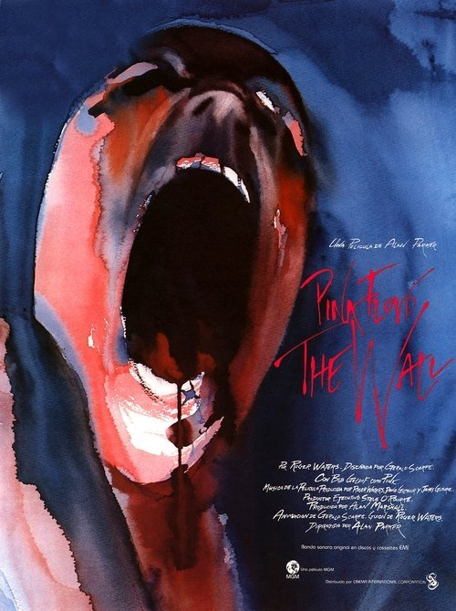

Pink Floyd: El muro (1982)
Sinopsis Rápida
¿Qué pasa cuando la fama, la locura y la guerra interior chocan en una explosión de rock psicodélico y animación desgarradora? Descubre el viaje devastador de Pink, una estrella de rock que construye un muro para protegerse del mundo.
Sinopsis Detallada
Pink Floyd: El muro es una experiencia cinematográfica única que trasciende el simple concierto fílmico. A través de una cautivadora mezcla de imágenes en vivo y la animación surrealista de Gerald Scarfe, la película explora la compleja psique de Pink, un rockero que colapsa bajo el peso de la fama y los traumas de su infancia. Desde la guerra y el abuso hasta la alienación y el vacío existencial, la película es una exploración visceral y poética de la fragilidad humana. La banda sonora, por supuesto, es icónica, llevando la narrativa a otro nivel con su poder evocador.
¿Por qué tenés que verla?
- Una experiencia audiovisual inmersiva que combina la potencia del rock de Pink Floyd con imágenes impactantes.
- La animación de Gerald Scarfe es una obra maestra surrealista y oscura que complementa a la perfección la música.
- El Muro dejó una marca indeleble en la cultura popular, influyendo en generaciones de artistas y cineastas.
- Explora temas universales como la alienación, la guerra y la búsqueda de identidad.
Idea Extra
Análisis del simbolismo en la animación de Gerald Scarfe: Descifrando los mensajes ocultos en la obra maestra visual de El Muro.
{{CONTENIDO_RELACIONADO}}